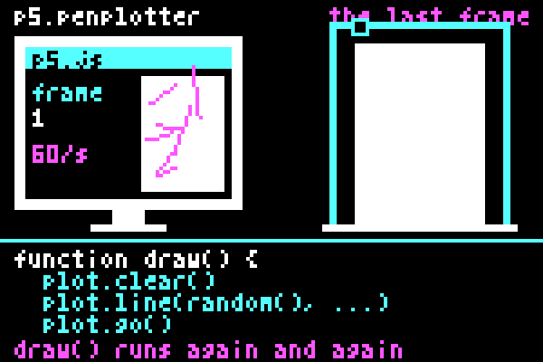
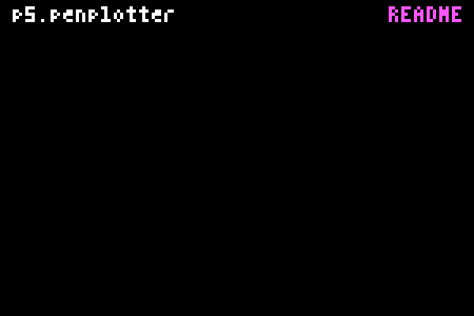

About p5.penplotter
A p5 sketch runs sixty times a second and forgets every frame. A pen plotter draws once and keeps it. I wanted the smallest possible bridge between those two habits, and this is it.
Why
I wanted a small route from a p5 sketch to my plotter. Supported plot.line(), plot.circle() and other shape calls draw on the canvas and record geometry in millimetres. plot.go() plans that recording when you start the plot. Clear at the start of a frame to replace earlier geometry, or leave it to accumulate.

plot.clear() at the beginning of draw(), each frame replaces the recorded geometry. The click plots that recording. Without clearing it, the lines accumulate. Use noLoop() when you want to keep one drawing still.Drawing in p5, planning in the engine
createPlot() supplies the draw-and-record object. createPlotterEngine() exposes the core directly, and drawRoute() draws its planned routes in p5. The adapter maps pixels to millimetres; geometry, cleanup, planning, exports and machine control stay in vanilla.penplotter.
The dependency runs one way, and it is checked: when a driver is handed in, p5.penplotter reads the engine's version and refuses one that is too old, with a plain sentence. The Requirements table is identical in both READMEs because a test says so.
SVG capture and direct plotting
p5.plotSvg by Golan Levin records a p5 sketch as SVG and covers a wider drawing API. This adapter records a smaller set of explicit shape calls and can pass them to the EBB driver. SVG import and export are also available through the core; imported files must fit its supported subset.
The machine
Physical tests use my iDraw HSE / A2 with EBB firmware 3.0.2. Park the carriage at home by hand. You can write plot.go() at the end of draw(); it waits for a click to open the connection and start plotting. Other machines have not been physically tested here.

How this was made
I use AI to build bridges, not cities. This adapter is the smallest bridge I could make: helpers between p5.js and an engine that already existed, so that a sketch reaches a pen. The conversations that built it connected things I could not connect before. They never replaced the pleasure of coding; that stays mine, and so does the responsibility for what is here.
I designed and directed it and wrote it with AI assistance. The Setup page grew out of the load-order problems I encountered with modules and p5 global mode.
Sebastien Vanblaere · prjcts.be
Related work
- p5.plotSvg: SVG capture for p5.js.
- p5.plotterControl: live control of GRBL pen plotters from p5.js; this adapter targets EBB boards and plans the whole drawing first.
- p5.gysin and wave samplers: the sister libraries; the second supplies the numbers several examples here draw with.
The handbook explains the methods and recording limits. MIT License. Source and issues on GitHub.